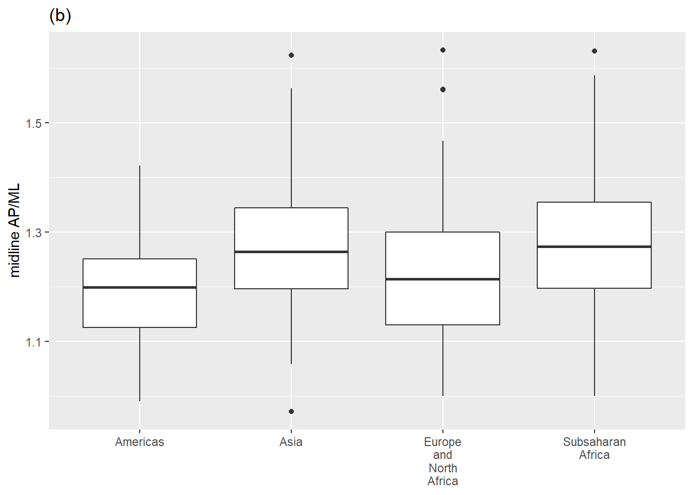
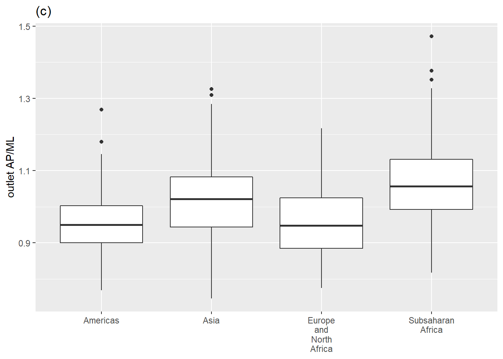

Seminar 2
Instructions
Find an interesting dataset on DataDryad.org (or another data repository) and download it. Make an RStudio project to reproduce one or more of the figures in the paper associated with the dataset, making your analysis as reproducible as possible by using (at least)
git and GitHub
renv for package management
Best practice for comments and code style
here package for helping load data
quarto or Rmarkdown for the document (reference the data source and the original paper)
Figures
Variation in the inlet (a), midplane (b), and outlet (c) indices within the four major geographical regions Betti and Manica (2018).


References
Betti, Lia, and Andrea Manica. 2018. “Human variation in the shape of the birth canal is significant and geographically structured.” Proceedings of the Royal Society B: Biological Sciences 285 (1889). https://doi.org/10.1098/rspb.2018.1807.